Tópicos Avançados
Tratamento de erros
Vamos mostrar na prática como tratar um erro. Nesse exemplo temos uma função normal que recebe dois parametros e soma os dois números, temos aqui alguns meios de testar essa função se vai dar erro ou não,lembrando que o JavaScript converte alguma situações para números pois estamos usando o conversor Number, então nesse caso o true vai ser convertido para 1.

O try vai ser o nosso tratamente para erros, ele é um bloco de código que vai tentar executar todos os nosso consoles, e caso ele ache o erro vamos usar o outro bloco de código que é o catch, que vai exeutar se acontecer um erro, e vai fazer com que a nossa aplicação não pare, mas continue rodando. Isso serve para deixarmos um outro bloco de código como plano b, caso dê erro podemos fazer outra coisa. Isso serve para podemos fazer algo com esse erro, reornar para o ususário ou qualquer outra coisa.

Podemos dar um parametro para o catch e dar um console.log no erro para mostrar a mensagem padrão.

Temos o finally que tem o uso interessante, ele sempre é executado.

Nesse resultado, ele fez a primeira e a segunda soma, na terceira caiu no catch e mostrou a mensagem de erro e executou o finally e mostrou a mensagem do finally.

Expressões Regulares
- O ^ é usado para capturar a palavra ou a letra que está no inicio.
- O $ é usado para capturar a palavra ou a letra que está antes do final.
- O | é usado para como o operador lógico OU.
- O + é usado para capturar uma sequencia de letras. ex: a+ ele vai retonar se tiver dois aa juntos.
- O \ é usado para indicar que não queremos algo, para escapar. ex: um caracter especial.
- O \w é usado para indicar todos os caracteres que não são especiais, marcando somente letras, números e underscore, deixando de marcar ponto, espaço ou qualquer outro caracter especial.
- O \W (maiúsculo) é usado para indicar todos os caracteres especiais, faz o contrário do \w.
- O \d é usado para indicar todos os numeros.
- O \D (maiúsculo) é usado para indicar todos os caracteres que não são numeros, faz o contrário do \d.
- O \s é usado para indicar todos os espaços.
- O \S (maiúsculo) é usado para indicar todos os caracteres que não são espaços, faz o contrário do \s.
- O . é usado para indicar que queremos capturar qualquer caracter. ex: (..) pegar dois caracter dentro de um parenteses.
- O [] é usado para agrupar, podedendo ser passados alguns parametros, como: [atb], [a-z]
- O {} é usado para agrupar, podedendo ser passados alguns parametros, como: a{2,3} Pegaria todos os a que estivessem em grupos de 2 ou 3.
- Look ahead(positive) - Quando queremos agrupar algo e passamos um parametro que esteja a frente, ex: or(?=\s) Nesse caso vamos pegar os or que depois vem um espaço.
- Look ahead(negative) - Quando queremos agrupar algo e passamos um parametro que esteja a frente, mas nesse caso vamos praticamente negar o positive, basta troca o = por um !, ex: or(?!\s) Nesse caso vamos pegar os or que não vem um espaço depois.
- Look behind(positive) - Quando queremos agrupar algo e passamos um parametro que esteja atras, ex: (?<=l)or Nesse caso vamos pegar os or que tem uma letra l antes.
- Look behind(negative) - Quando queremos agrupar algo e passamos um parametro que esteja atras, mas nesse caso vamos praticamente negar o positive, basta troca o = por um !, ex: (?"sinal de menor"!l)or Nesse caso vamos pegar os or que não tem uma letra l antes, lembrando que dentro desse parametro poderiamos passar uma expressão usando o | ou qualquer outro metodo acima.
Modo prático de como usar
Usamos o metodo replace que é disponível para as strings, ele permite substituir. Nesse caso o \s seleciona todos os espaços em branco, depois seleciona todas as letras primeiro as letras minúsculas de a à z e depois as maiúsculas, passamos a flag g para pegar toda a string e substituimos por nada, que é o mesmo que "".
Country Code - Pegamos a string já corrigida e usamos o método match, usamos o look behind, escapamos o + com a contra barra, \d para pegar os digitos, usamos as chaves para pegar de 1 a 3 numeros. O método match deolve um array, e como só queremos o primeiro valor, usamos o [0] para retonar somento o que queremos.
DDD - Pegamos a string já corrigida e usamos o método match, usamos o positive look behind, escapamos o ( com a contra barra, \d para pegar os digitos, o + para pegar qualquer quantidade, e vamos colocar um look ahead, usamos depois um contra barra para escapar ), usamos o [0] para retonar somento o que queremos.
Telephone Number - Pegamos a string já corrigida e usamos o método match, usamos o positive look behind, escapamos o ) com a contra barra, usamos o ponto para pergar o - e o + para pegar qualquer quantidade de caracter, usamos o [0] para retonar somento o que queremos.

E como saída temos:

Flags
- Por padrão a expressão regular só vai pegar a primeira aparição.
- Global(g) - utilizada para pegar por toda ocorrencia.
- Insentive(i) - utilizada para não diferenciar maúsculas e minúsculas..
- Multi Line(m) - utilizada para capturar o inicio e o final de cada linha.
SetTimeout
Usado para servir como um temporizador, para se fazer algo depois de um tempo. Usamos a palavra reservada setTimeout e ela pede uma função como primeiro parametro, o segundo paramentro é o tempo que vai demorar para fazer aquela ação, lembrando que o tempo é em milisegundos, nesse caso estamos usando mil milisegundos(que é o mesmo que 1 segundo) e multiplicamos por três (3 segundos).
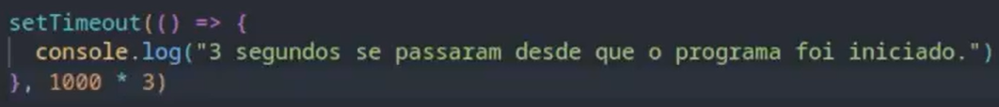
Podemos também armazenar o setTimeout em uma variável, para que ele retorne e assim usarmos outra função a clearTimeout que serve para limpar a função, ou seja, pular o setTimeout.
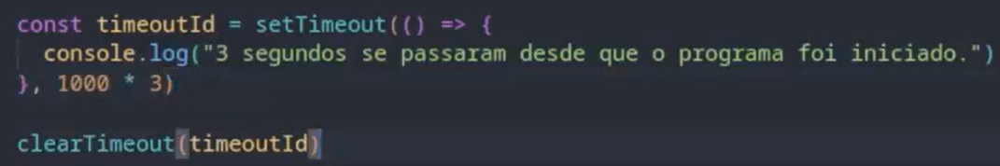
SetInterval
Muito parecido com o setTimeout, mas o que o diferencia é que ele repete várias vezes, aqui ele vai esperar o tempo e excutar novamente.
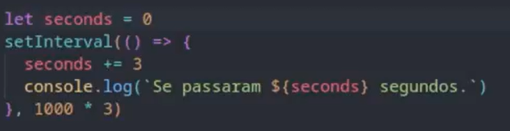
Podemos também armazenar o setInterval em uma variável, para que ele retorne e assim usarmos outra função a clearInterval que serve para parar ou controlar a execução do setInterval.
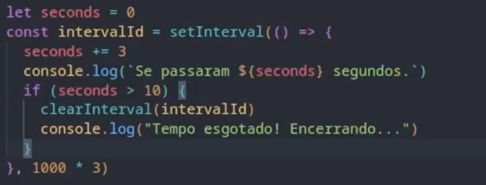
Promises
Uma promise é um objeto que tem associada a ele uma função que é executada de forma asincrona e devolve um valor para que possamos trabalhar com esse resultado. Tem como status pending que é pendente, resolved que é uma promise que foi executada e teve sucesso e rejected que foi executada e teve não teve sucesso. Usamos o parametro resolve para retornar algo.
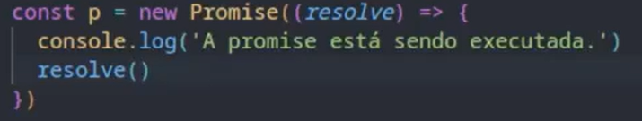
Podemos usar também o parâmetro de rejected para mostrar um erro que pode ocasionar no código.
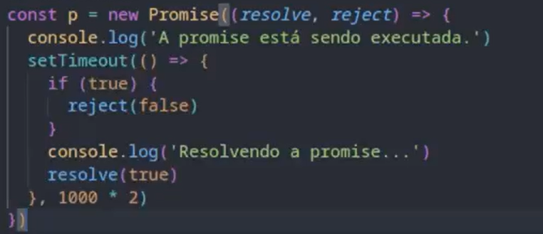
A forma mais comum de se trabalhar com as promises retornando de uma função por que assim conseguimos controlar quando estamos chamando essa promise.
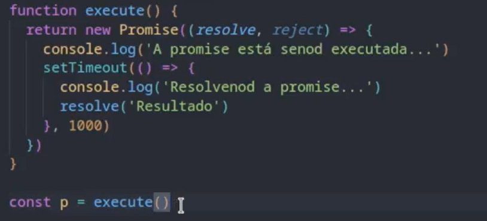
Métodos then e catch
O then serve para lhe darmos com uma promise e já resolvida, dentro do then usamos uma função de callback, ela vai receber como parâmetro nosso resultado o resultado da promise, ou seja, o Resolve.
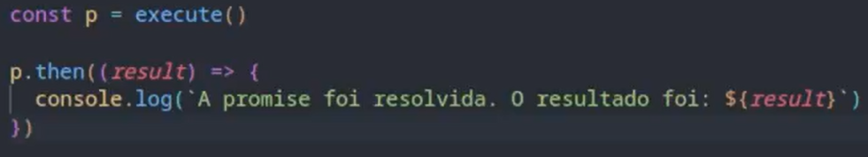
O catch é utilizado para tratar os erros da promise. A forma mais comum de vê a utilidade do catch é logo após usar o then, por que o then retorna o valor da promise. O catch também tem uma função de callback mas também tem um parâmetro que é o motivo do erro.
Nossa promise.
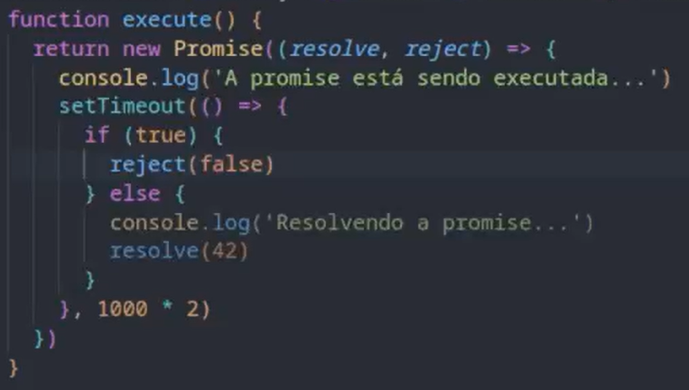
O método catch.
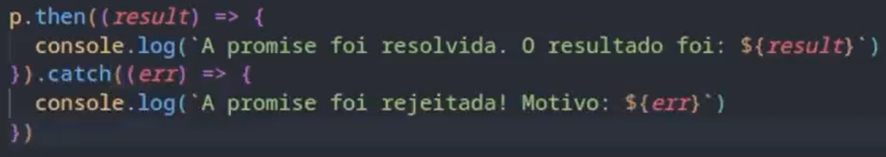
O finally somente vai ser executado quando a promise se for finalizada, lembrando que ele não tem parâmetro. A forma mais correta de se ver a utilização de um then-catch é logo após a execução de uma função, encadeando ume método após o outro.
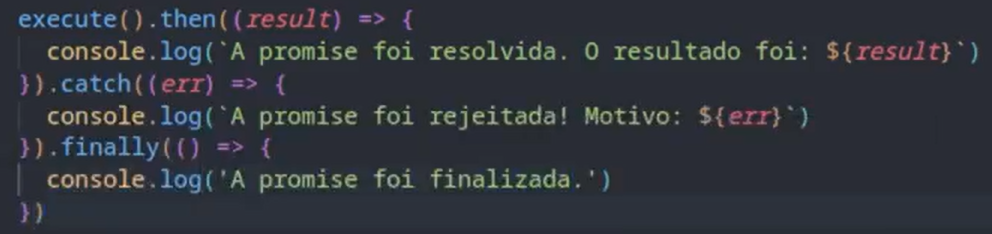
Encadeando Promises
Precisamos encadear promises, quando queremos que o return de uma promise seja necessário para outra, para isso é extremamente necessário que usemos o return, vamos ver como funciona com um exemplo abaixo.
Aqui temos uma função que retonar uma promise, que recebe uma idade e verifica se é maior de idade ou não.

Aqui temos uma função que retonar uma promise, que recebe uma data de aniversário e calcula quantos anos essa pessoa tem.
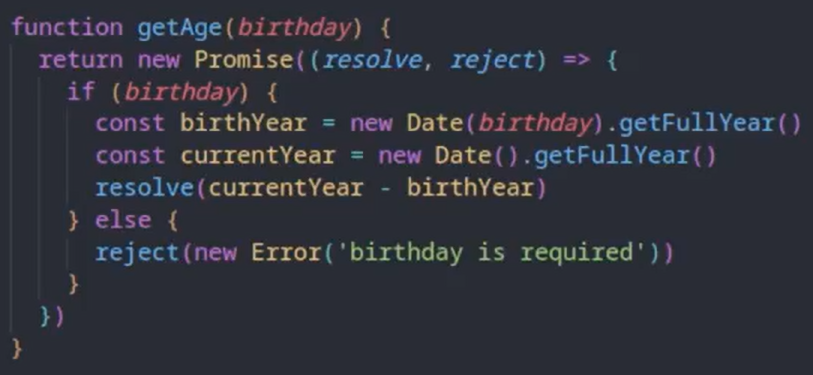
Aqui chamamos a primeira função e passamos uma data de anivresário, chamamos o then e dentro do then chamamos a função que calcula a idade, é como se o then da primeira função fosse somente para chamar a outra função e depois disso chamamos o then da segunda função, e como o reject das duas funções é o mesmo, fechamos com apenas um catch.
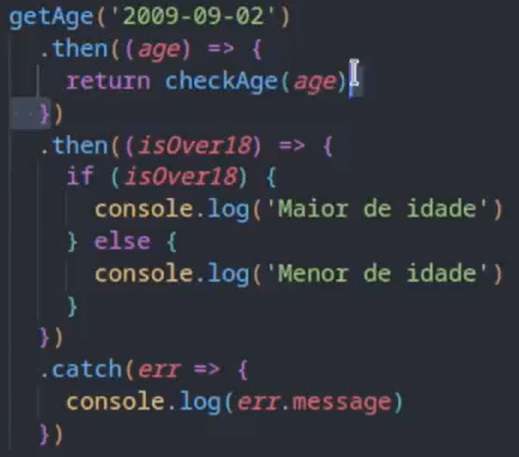
Executando Várias Promises
Podemos executar várias promises de uma só vez e para isso vamos usar entender com o exemplo abaixo.
Temos duas funções simples, uma que calcula a soma de dois númeors e outra que subtrai dois números, chamamos essas funções dentro de variáveis.

E para executarmos todas de uma vez usamos o Pormise.all que pede um array e nesse caso passamos as duas variáveis como um array, depois usamos o then e o catch, como uma promise normal, Nesse exmplo só irá retonar se as duas promises forem resolvidas.
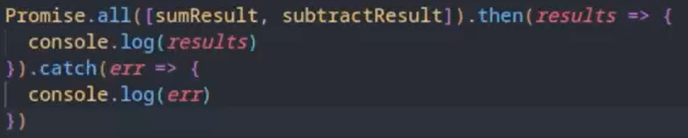
Nesse outro exemplo, temos um array de números, uma função para calcular a potência de um número e passamos a função map que retorna um array, e passamos a promise como uma função de callback.
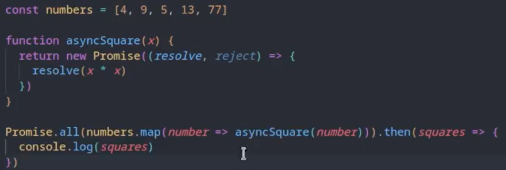
Funções Async
Podemos declarar promises de uma fomra bem mais simples, que são as funções asyncronas.
Antes para trabalhar com uma promise teriamos que criar uma função que retona uma promise, vamos ver um exemplo de uma promise que soma dois numeros e vamos transforma la em uma função asyncrona, promise original:
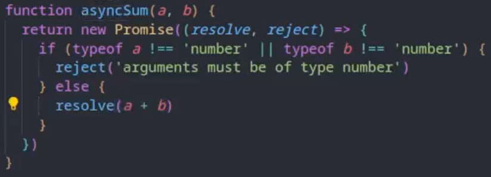
Para transforma la em asyncrona basta colocar a palavra reservada async antes da função, e o return será o mesmo que o resolve.
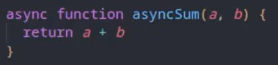
E para rejeitar, fizemos uma verificação e usamos o Promise.reject
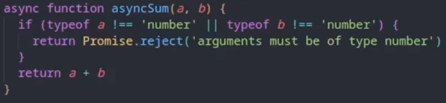
Await
Para utilizarmos o await precisamos entender que ele só funcionará dentro de funções asyncronas e que ele trava o nosso código, diferente de se usarsemos o then, tudo depois do then pode ser executado enquanto o then está sendo resolvido, mas com o await não, tudo depois dele fica esperando a resolução do await.
Antes para chamar uma função asyncrona, chamavamos dessas forma:
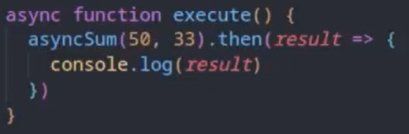
Com o await, podemos chamar dessa fomra:
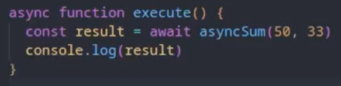
E para tratar os erros, podemos usar o try catch normal, dessa forma:
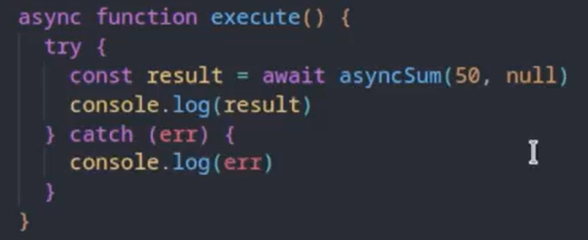
Promise.all com async e await
Criamos um array de números, inserimos o método map, com uma função asyncrona que chama uma função que espera 2 segundos e então retorna o calculo do número * número, mas o problema que o console não consegue ler os resultados, por quue deesa maneira, seria como pedissemos para ele ler várias promises e desse modo ele não consegue fazer.
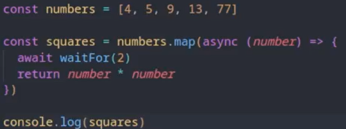
Para ler cada resultado precisamos usar o promise.all, pois cada número do array se tornou uma promise, depois basta passar o método then como vimos antes.
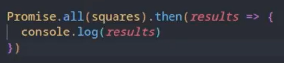
Uma outra maneira de fazermos isso é criando uma função asyncrona e passando o método map para dentro do promise.all
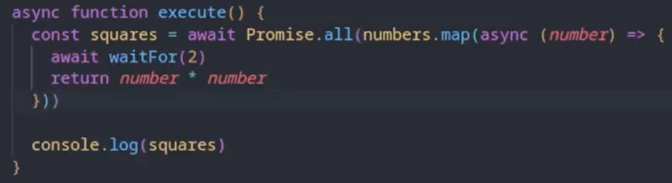
Requisição GET
Podemos fazer requisições de APIs da seguinte forma: Dentro de uma async function importamos a API desejada pelo método fetch, passando uma string que será a url desejada. Depois convertemos ela para o formato JSON, onde o JavaScriptpode entender.
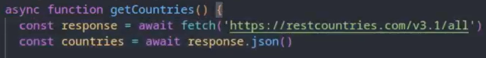
Se dermos um console podemos ver que ele retorna um objeto, com infomrações como o corpo da requisição, os cabeçalhos, o ok que mostra se foi bem sucedida, o status, a url que foi requisitada e outras informações.
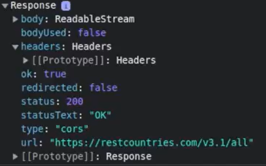
Depois podemos trabalhar com essa API de maneira similar como já vimos antes, como no exemplo abaixo:
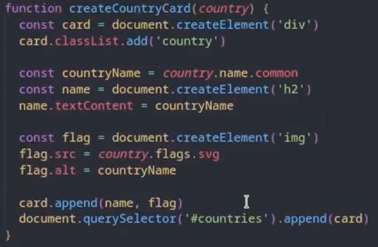
Neste exemplo, pegamos para cada um dos objetos que importamos e como função de callback usamos a função que insere algumas informações em um card.
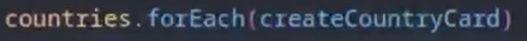
Requisição POST